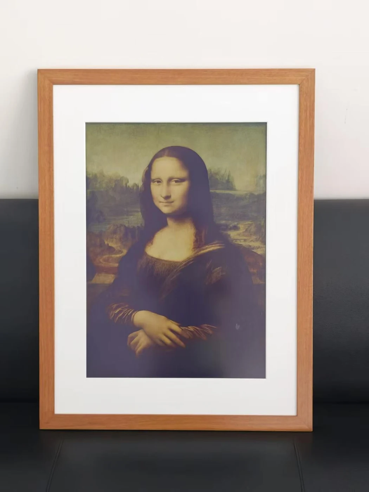
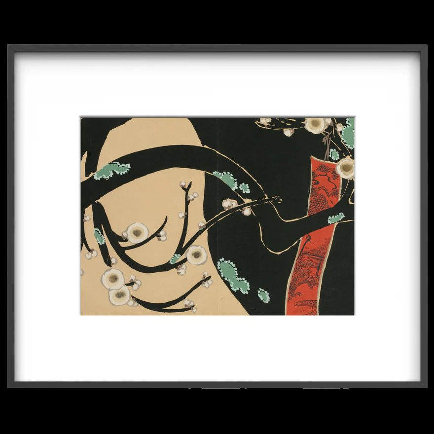

电子纸这两年被用在越来越多的场景里，其中有一部分并不合适。它的物理特性决定了一条清晰的边界：画面静止时不耗电、阳光下可读、无背光不刺眼；但刷新需要时间，无法播放动态内容。理解这条边界，比比较分辨率和色数更重要。
这篇文章讲四件事：电子纸和液晶屏各自的适用场景、内容更新频率怎么影响方案设计、云端内容管理需要哪些能力、以及安装与供电方式如何决定项目可行性。
一、刷新速度是硬边界
电子纸的成像原理是靠电场驱动微胶囊内的颜色粒子移动，整屏刷新需要时间，彩色屏比黑白屏更慢。这不是产品成熟度问题，是原理决定的。因此判断能不能用电子纸，应先确认的问题是：这块屏上的内容多久变一次？
这张表里需要重点现场判断的是"每小时"这一行。是否可行需结合设备规格判断，但更新越频繁越耗电，电池供电的终端续航会明显缩短。如果这块屏在高处或吊顶上、换电池需要搭梯子，那么频繁更新带来的运维成本可能抵消掉它省下的布线成本——这时更合理的选择是接市电，或者把更新频率降到每几小时一次。
另一个常见误区是想用电子纸做"带一点动效"的展示。即使只是页面之间切换，电子纸的刷新过程也会有明显的闪烁与残影过渡，视觉上不像液晶那样干净。如果内容设计里包含转场效果，那就是在用错的介质做对的设计。
二、电子纸真正的优势在哪里
把刷新速度这个限制放在一边，电子纸有四项液晶屏做不到的特性。这四项决定了它值得用在什么地方。
显示层主要在刷新时耗电；整机功耗还受通信、控制器与更新频率影响。这让电池供电与免布线部署成为可能。
环境光越强越清楚，橱窗、户外走廊与天窗下的位置不会像液晶那样反光泛白。
酒店客房、图书馆、美术馆与住宅里，发光屏会破坏氛围，类纸质感更容易融入。
侧面看不偏色、不变暗，适合走廊与货架侧挂这类斜视场景。
第一项衍生出的部署优势往往被低估。在满足安装、环境和通信条件的位置，电池供电可减少供电布线；陈列调整时可按现场方案移动，施工需求以实际条件为准。对于经常调整布局的零售与展陈空间，这比屏幕本身的显示效果更有价值。
第三项则解释了智能画框这个品类为什么存在。液晶屏在家居与酒店空间里的问题不是画质，而是它"看起来像一块屏"——夜间发光、白天反光、关机后是一块黑板。电子纸画框在断电状态下仍然显示画面，视觉上更接近一幅装帧作品，这是它在艺术与空间装饰场景里的核心卖点。


三、内容管理：两类需求要分开设计
商业标牌和艺术画框虽然用同一种显示技术，但它们的内容管理需求几乎没有交集。把两者混在一套后台里，通常会得到一个两边都不好用的系统。
需要的是模板化排版、按门店或区域批量下发、与业务系统对接取数、以及执行状态回传。这套逻辑和电子价签的数据中台是同一类问题——本质上是"把正确的数字送到正确的位置"，重点在准确性与可追溯。
需要的是图片质量适配、色彩映射调整、播放列表与定时轮换、以及单台或小批量的个性化设置。它不需要对接 ERP，但对显示效果的要求高得多——同一张画在不同色彩映射下差别很大。
在商业信息这一侧，还有几项能力是项目落地时必须确认的：设备分组与权限（谁能改哪一批标牌）、更新失败的重试与告警、电量监控与更换提醒、以及内容版本记录。这几项和电子价签系统的要求完全一致，如果项目里两者都有，用同一套平台管理会省很多事。
在空间内容这一侧，需要关注的是色彩映射。电子纸的可显示色数远少于液晶，一张色彩丰富的照片直接推上去，观感往往和预期差距很大。可行的做法是在后台预置几种映射方案（偏中性、偏暖、增强对比），上传时预览确认再下发。这一步做不做，直接决定客户对"画质"的评价。
选电子纸还是液晶，取决于内容多久变一次；用哪套内容管理，取决于你要的是准确还是质感。这两个判断做对了，剩下的都是安装问题。
四、安装与供电：决定项目可行性的一环
显示效果谈完了，真正让项目卡住的常常是安装。下面五项要在方案阶段就确认，它们决定尺寸选择、供电方式与运维成本。
电池供电免布线但要换电；市电供电可减少电池更换需求，但需布线及日常维护。更新频率高、位置难达的场景优先接市电。
换电池或维护时需不需要搭梯子、关闭区域、申请动火许可。高处安装的运维成本要提前计入。
终端需要接入网关或无线网络才能收到内容。地下层、金属结构密集区与户外位置要单独勘测。
温度范围、湿度、是否有水汽或油污。冷链、户外与厨房区域需要对应的防护等级与工作温区。
壁挂、吊挂、嵌入还是货架卡扣。装修方是否允许打孔、能不能改动墙面，会直接限制方案。
这五项里的"可达性"需要纳入运维评估。一块装在六米高吊顶下的标牌，换一次电池可能需要申请高空作业、错开营业时间、安排两个人配合——单次成本远高于电池本身。因此在方案阶段就应该反过来推：如果某个位置维护困难，就把它的更新频率降下来，或者干脆接市电。
"环境条件"则常在户外与冷链项目上出问题。电子纸有工作温度范围，低温下刷新会变慢甚至失败，高温高湿环境需要额外防护。这两类场景不是不能做，但必须选对应规格的产品，使用常规室内型号可能无法满足相关环境要求。
五、一份选型自查清单
把前面四节压缩成可执行的顺序，判断一个电子纸项目是否成立，按下面五步走一遍即可。
STEP 1 的作用是筛掉不该用电子纸的项目。这一步花五分钟，能避免后面几个月的返工——用错介质的项目通常无法靠调参数或换型号救回来，只能重做。
最后回到开头那句话：电子纸不是"更省电的屏"，它是一种具有不同物理特性的显示介质。承认这个差异、按它的特性选场景，可结合产品规格评估其在价格标识、空间导视、状态看板与艺术展示中的应用；把它直接当成液晶的低功耗替代品，可能与动态显示等使用需求不匹配。